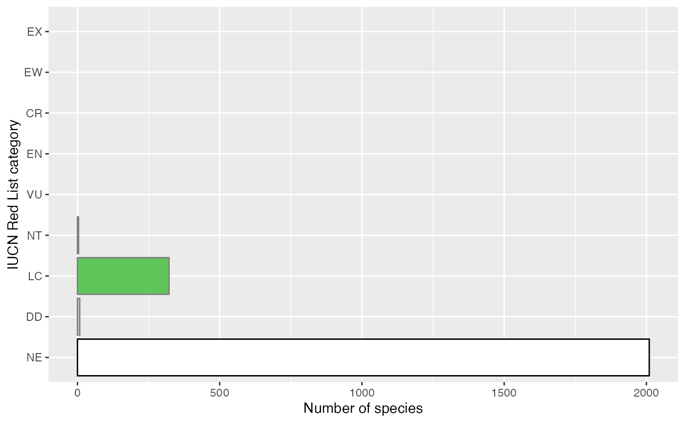

vignettes/articles/mapping-assessed-species.Rmd
mapping-assessed-species.RmdThis is a demonstration of one use for some of the kewr resources, in calculating the proportion of species that have been assessed in a country.
To do this, we’ll follow these steps:
In addition to kewr, we’ll load:
The first step in this problem is to get a list of assessed species for a country.
The most authoritative list of global species assessments is the IUCN Red List of Threatened Species. For this package, I used the rl_sp_country function from rredlist to request all assessments for taxa found in Denmark from the IUCN Red List API. I then used the rl_search function to request full assessment information for each taxon.
You can do the same by installing the rredlist package. You’ll need an API key to use the IUCN Red List API, which you can register for here. Alternatively, you can download the information you need directly from the IUCN Red List website.
I’ve bundled up the Danish plant assessments in this package to make things easier for this analysis.
head(danish_plants)
#> # A tibble: 6 × 4
#> taxonid scientific_name authority category
#> <int> <chr> <chr> <chr>
#> 1 193523 Acer campestre L. LC
#> 2 193853 Acer platanoides L. LC
#> 3 202910 Achillea ptarmica L. LC
#> 4 165155 Aconitum napellus (Nyár.) W.Seitz LC
#> 5 168639 Acorus calamus L. LC
#> 6 202914 Aesculus hippocastanum L. VUIn total, there are assessments for 361 vascular plants from Denmark.
To match these names to an IPNI ID, we’ll use the Kew Names Matching Service. The first thing we’ll do, is join the taxonomic authority to the scientific name, to hopefully reduce the number of matches for each name.
danish_plants <-
danish_plants %>%
unite("full_name", scientific_name, authority, sep=" ", remove=FALSE)Then we put the full names through KNMS.
full_matches <- match_knms(danish_plants$full_name)
full_matches
#> <KNMS match: 361 names submitted>
#> Matches returned: 349
#> Multiple matches: 4
#> Unmatched names: 8
#> List of 1
#> $ :List of 4
#> ..$ : chr "Acer campestre L."
#> ..$ : chr "true"
#> ..$ : chr "urn:lsid:ipni.org:names:781250-1"
#> ..$ : chr "Acer campestre Sp. Pl.: 1055 (1753) L. 1753"Most of our names had matches! Which makes things simpler. But we also got some names that returned multiple matches.
First we’ll try putting just the scientific names of our missing matches through KNMS again.
full_matches <- tidy(full_matches)
unmatched <- filter(full_matches, !matched)
to_match <-
danish_plants %>%
filter(full_name %in% unmatched$submitted)
part_matches <- match_knms(to_match$scientific_name)
part_matches
#> <KNMS match: 8 names submitted>
#> Matches returned: 7
#> Multiple matches: 0
#> Unmatched names: 1
#> List of 1
#> $ :List of 4
#> ..$ : chr "Aconitum napellus"
#> ..$ : chr "true"
#> ..$ : chr "urn:lsid:ipni.org:names:707615-1"
#> ..$ : chr "Aconitum napellus Sp. Pl.: 532 (1753) L. 1753"Almost everything returned a match. We could attempt to manually match the final name, but as it’s just one we’ll leave it out.
Now we can join all of our matches together, link them to the IUCN taxon ID, and resolve any synonyms.
part_matches <- tidy(part_matches)
full_matches <-
full_matches %>%
filter(matched) %>%
left_join(
danish_plants %>% select(taxonid, full_name, category),
by=c("submitted"="full_name")
)
part_matches <-
part_matches %>%
filter(matched) %>%
left_join(
danish_plants %>% select(taxonid, scientific_name, category),
by=c("submitted"="scientific_name")
)
matched_names <- bind_rows(full_matches, part_matches)
head(matched_names)
#> # A tibble: 6 × 6
#> submitted matched ipni_id matched_record taxonid category
#> <chr> <lgl> <chr> <chr> <int> <chr>
#> 1 Acer campestre L. TRUE 781250-1 Acer campestre Sp… 193523 LC
#> 2 Acer platanoides L. TRUE 781455-1 Acer platanoides … 193853 LC
#> 3 Achillea ptarmica L. TRUE 2336-2 Achillea ptarmica… 202910 LC
#> 4 Acorus calamus L. TRUE 84009-1 Acorus calamus Sp… 168639 LC
#> 5 Aesculus hippocastanum L. TRUE 781594-1 Aesculus hippocas… 202914 VU
#> 6 Agrostis canina L. TRUE 385537-1 Agrostis canina S… 167861 LCNow that we have an IPNI ID attached to each assessment, we can look up the record for the taxa in WCVP. This will let us find out the taxonomic status of each name - the first step in resolving any synonymy issues.
# wrap up the lookup_wcvp function to make sure it comes back as a list
f <- function(taxonid) {
list(lookup_wcvp(taxonid))
}
resolved_names <-
matched_names %>%
nest_by(taxonid, ipni_id) %>%
mutate(wcvp_record=f(ipni_id))
resolved_names <-
resolved_names %>%
mutate(status=wcvp_record$status)With the taxonomic status, we’ll first remove any taxa that are unplaced. We’ll also remove any non-homotypic synonyms - even if we resolve these to accepted species, we can’t be sure that the assessment would be valid for the new concept, so that accepted species would not be assessed.
Next we’ll check if there are any taxa that still have multiple matches in WCVP.
resolved_names %>%
ungroup() %>%
add_count(taxonid) %>%
summarise(multiple_matches=sum(n > 1))
#> # A tibble: 1 × 1
#> multiple_matches
#> <int>
#> 1 0There are not.
So the final step is to find the accepted names for all homotypic synonyms and remove anything that is a lower rank than species.
resolved_names <-
resolved_names %>%
mutate(accepted_id=ifelse(status != "accepted",
wcvp_record$accepted$id,
wcvp_record$id),
accepted_name=ifelse(status != "accepted",
wcvp_record$accepted$name,
wcvp_record$name),
accepted_author=ifelse(status != "accepted",
wcvp_record$accepted$author,
wcvp_record$authors),
accepted_rank=ifelse(status != "accepted",
wcvp_record$accepted$rank,
wcvp_record$rank))
resolved_names <-
resolved_names %>%
select(-wcvp_record) %>%
unnest(cols=c(data)) %>%
rename(match_id=ipni_id)
accepted_species <-
resolved_names %>%
filter(accepted_rank == "Species") %>%
ungroup()
nrow(accepted_species)
#> [1] 352We are now left with 352 accepted species from Denmark with assessments.
To calculate the number of species that are assessed in Denmark, we need a checklist of all accepted species.
We can get this from Plants of the World Online.
checklist <- search_powo(list(distribution="Denmark"),
filters=c("accepted", "species"),
limit=5000)
checklist
#> <POWO search: distribution='Denmark' filters: 'accepted, species'>
#> total results: 2344
#> returned results: 2344
#> total pages: 1
#> First result:
#> List of 1
#> $ :List of 9
#> ..$ accepted: logi TRUE
#> ..$ author : chr "Wiinst."
#> ..$ kingdom : chr "Plantae"
#> ..$ family : chr "Asteraceae"
#> ..$ name : chr "Hieracium adenoceps"
#> ..$ rank : chr "Species"
#> ..$ snippet : chr " <b>Location</b>: <em>Denmark</em>"
#> ..$ url : chr "/taxon/urn:lsid:ipni.org:names:214408-1"
#> ..$ fqId : chr "urn:lsid:ipni.org:names:214408-1"Now we have this, we just need to join our assessments to our checklist.
And now we can calculate the proportion of species assessed in Denmark!
checklist %>%
summarise(p_assessed=mean(! is.na(category)))
#> # A tibble: 1 × 1
#> p_assessed
#> <dbl>
#> 1 0.142And make a simple bar chart of the number of species in each category.
iucn_colours <- c("NE"="#ffffff",
"DD"="#d1d1d6",
"LC"="#60c659",
"NT"="#cce226",
"VU"="#f9e814",
"EN"="#fc7f3f",
"CR"="d81e05",
"EW"="#542344",
"EX"="#000000")
checklist %>%
replace_na(list(category="NE")) %>%
mutate(category=factor(category, levels=names(iucn_colours),
ordered=TRUE)) %>%
ggplot(mapping=aes(y=category, fill=category,
colour=category == "NE")) +
geom_bar() +
scale_fill_manual(values=iucn_colours, drop=FALSE) +
scale_colour_manual(values=c(`TRUE`="black", `FALSE`=NA)) +
scale_y_discrete(drop=FALSE) +
guides(fill=FALSE, colour=FALSE) +
labs(x="Number of species", y="IUCN Red List category")
#> Warning: `guides(<scale> = FALSE)` is deprecated. Please use `guides(<scale> =
#> "none")` instead.